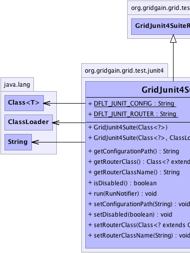
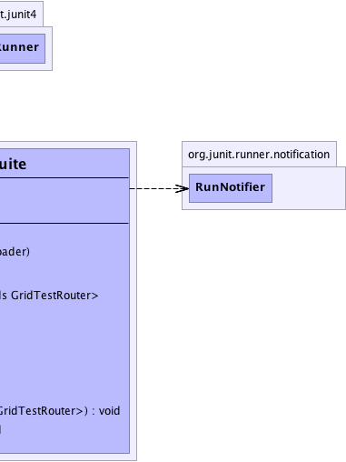

org.junit.runner.Runner
org.gridgain.grid.test.junit4.GridJunit4Suite
org.junit.runner.Runner
org.gridgain.grid.test.junit4.GridJunit4Suite
|
GridGain™ 3.6.0c
Community Edition |
|||||||||
| PREV CLASS NEXT CLASS | FRAMES NO FRAMES | |||||||||
| SUMMARY: NESTED | FIELD | CONSTR | METHOD | DETAIL: FIELD | CONSTR | METHOD | |||||||||
java.lang.Object
public class GridJunit4Suite
Test suite runner for distributing JUnit4 tests. Simply add tests to this suite runner just like you would for regular JUnit4 suites, and these tests will be executed in parallel on the grid. Note that if there are no other grid nodes, this suite runner will still ensure parallel test execution within single VM.
Below is an example of distributed JUnit4 test suite:
@RunWith(GridJunit4Suite.class)
@SuiteClasses({
TestA.class, // TestA will run in parallel on the grid.
TestB.class, // TestB will run in parallel on the grid.
TestC.class, // TestC will run in parallel on the grid.
TestD.class // TestD will run in parallel on the grid.
})
public class GridJunit4ExampleSuite {
// No-op.
}
If you have four tests A, B, C, and D, and if you need to run A and B sequentially, then you
should create a nested test suite with test A and B as follows:
@RunWith(GridJunit4Suite.class)
@SuiteClasses({
GridJunit4ExampleNestedSuite.class, // Nested suite that will execute tests A and B added to it sequentially.
TestC.class, // TestC will run in parallel on the grid.
TestD.class // TestD will run in parallel on the grid.
})
public class GridJunit4ExampleSuite {
// No-op.
}
@RunWith(Suite.class)
@SuiteClasses({
TestA.class,
TestB.class
})
public class GridJunit4ExampleNestedSuite {
// No-op.
}
Note that you can also grid-enable existing JUnit4 tests using @GridifyTest
annotation which you can attach to the same class you attach RunWith annotation to.
Refer to @GridifyTest documentation for more information.
Also note that some tests can only be executed locally mostly due to some environment issues. However
they still can benefit from parallel execution with other tests. GridGain supports it via
GridJunit4LocalSuite suites that can be added as nested suites to GridJunit4Suite. Refer
to GridJunit4LocalSuite documentation for more information.
System.out or System.err
is preserved. GridGain will accumulate all logging that is done on remote nodes, send them back
to originating node and associate all log statements with their corresponding tests. This way,
for example, if you are running tests from IDEA or Eclipse (or any other IDE) you would still
see the logs as if it was a local run. However, since remote nodes keep all log statements done within
a single individual test case in memory, you must make sure that enough memory is allocated
on every node and that individual test cases do not spit out gigabytes of log statements.
Also note, that logs will be sent back to originating node upon completion of every test,
so don't be alarmed if you don't see any log statements for a while and then all of them
appear at once.
GridGain achieves such log transparency via reassigning System.out or System.err to
internal PrintStream implementation. However, when using Log4J
within your tests you must make sure that it is configured with ConsoleAppender and that
ConsoleAppender.setFollow(boolean) attribute is set to true. Logging to files
is not supported yet and is planned for next point release.
GridJunit4TestSuite instances can be nested within each other as deep as needed.
However all nested distributed test suites will be treated just like regular JUnit test suites.
This approach becomes convenient when you have several distributed test suites that you
would like to be able to execute separately in distributed fashion, but at the same time
you would like to be able to execute them as a part of larger distributed suites.
GRIDGAIN_HOME/bin/ggjunit.{sh|bat} script, which will
start default configuration. If configuration other than default is required, then
use regular GRIDGAIN_HOME/bin/ggstart.{sh|bat} script and pass your own
Spring XML configuration file as a parameter to the script.
You can use the following configuration parameters to configure distributed test suite
locally. These parameters are set via GridifyTest annotation. Note that GridGain
will check these parameters even if AOP is not enabled. Also note that many parameters
can be overridden by setting corresponding VM parameters defined in GridTestVmParameters
at VM startup.
| GridConfiguration Method | Default Value | Description |
|---|---|---|
GridifyTest.disabled() |
false |
If true then GridGain will be turned off and suite will run locally.
This value can be overridden by setting GridTestVmParameters.GRIDGAIN_DISABLED VM
parameter to true. This parameter comes handy when you would like to
turn off GridGain without changing the actual code.
|
GridifyTest.configPath() |
DFLT_JUNIT_CONFIG |
Optional path to GridGain Spring XML configuration file for running JUnit tests. This
property can be overridden by setting GridTestVmParameters.GRIDGAIN_CONFIG VM
parameter. Note that the value can be either absolute value or relative to
${GRIDGAIN_HOME} installation folder.
|
GridifyTest.routerClass() |
{@link GridTestRouterAdapter} |
Optional test router class that implements GridTestRouter interface.
If not provided, then tests will be routed in round-robin fashion using default
GridTestRouterAdapter. The value of this parameter can be overridden by setting
GridTestVmParameters.GRIDGAIN_TEST_ROUTER VM parameter to the name of your
own customer router class.
|
GridifyTest.timeout() |
0 which means that tests will never timeout. |
Maximum timeout value in milliseconds after which test suite will return without
waiting for the remaining tests to complete. This value can be overridden by setting
GridTestVmParameters.GRIDGAIN_TEST_TIMEOUT VM parameter to the timeout value
for the tests.
|
| Wiki | |
| Forum |
|  |  |
| Field Summary | |
|---|---|
static String |
DFLT_JUNIT_CONFIG
Default GridGain configuration file for JUnits (value is config/junit/junit-spring.xml). |
static String |
DFLT_JUNIT_ROUTER
Default JUnit test router (value is GridTestRouterAdapter.class.getName()). |
| Constructor Summary | |
|---|---|
GridJunit4Suite(Class<?> cls)
Creates distributed suite runner for given class. |
|
GridJunit4Suite(Class<?> cls,
ClassLoader clsLdr)
Creates distributed suite runner for given class. |
|
| Method Summary | |
|---|---|
protected List<org.gridgain.grid.test.junit4.GridJunit4Runner> |
createChildren()
|
protected org.junit.runner.Description |
createDescription()
|
String |
getConfigurationPath()
Gets path to GridGain configuration file. |
org.junit.runner.Description |
getDescription()
|
Class<? extends GridTestRouter> |
getRouterClass()
Gets router class used for test routing. |
String |
getRouterClassName()
Gets JUnit test router class name. |
protected org.gridgain.grid.test.junit4.GridJunit4Runner |
getRunner(Class<?> testCls)
|
boolean |
isDisabled()
Gets flag indicating whether GridGain should be enabled or not. |
protected boolean |
isLocal(org.gridgain.grid.test.junit4.GridJunit4Runner runner)
|
void |
run(org.junit.runner.notification.RunNotifier notifier)
|
void |
setConfigurationPath(String cfgPath)
Sets path to GridGain configuration file. |
void |
setDisabled(boolean disabled)
Disables GridGain. |
void |
setRouterClass(Class<? extends GridTestRouter> routerCls)
Sets router class. |
void |
setRouterClassName(String routerClsName)
Sets name of class for routing JUnit tests. |
| Methods inherited from class org.junit.runner.Runner |
|---|
testCount |
| Methods inherited from class java.lang.Object |
|---|
clone, equals, finalize, getClass, hashCode, notify, notifyAll, toString, wait, wait, wait |
| Field Detail |
|---|
public static final String DFLT_JUNIT_CONFIG
config/junit/junit-spring.xml).
public static final String DFLT_JUNIT_ROUTER
GridTestRouterAdapter.class.getName()).
| Constructor Detail |
|---|
public GridJunit4Suite(Class<?> cls)
cls - Class to create suite runner for.public GridJunit4Suite(Class<?> cls, ClassLoader clsLdr)
cls - Class to create suite runner for.clsLdr - Tests class loader.| Method Detail |
|---|
public void setConfigurationPath(String cfgPath)
{GRIDGAIN_HOME}/config/junit/junit-spring.xml is used.
cfgPath - Path to GridGain configuration file.public String getConfigurationPath()
{GRIDGAIN_HOME}/config/junit/junit-spring.xml is used.
public void setDisabled(boolean disabled)
true then this suite will execute locally
as if GridGain was not in a picture at all.
disabled - If set to true then this suite will execute locally
as if GridGain was not in a picture at all.public boolean isDisabled()
true then this suite will execute locally as if GridGain was not
in a picture at all.
true then this suite will execute locally as if GridGain was not
in a picture at all.public void setRouterClassName(String routerClsName)
GridJunit4Suite.DFLT_JUNIT_ROUTER
class name is used.
routerClsName - Junit test router class name.public String getRouterClassName()
public void setRouterClass(Class<? extends GridTestRouter> routerCls)
GridTestRouterAdapter is used.
routerCls - Router class to use for test routing.public Class<? extends GridTestRouter> getRouterClass()
public void run(org.junit.runner.notification.RunNotifier notifier)
public final org.junit.runner.Description getDescription()
getDescription in interface org.junit.runner.DescribablegetDescription in class org.junit.runner.Runnerprotected org.junit.runner.Description createDescription()
protected List<org.gridgain.grid.test.junit4.GridJunit4Runner> createChildren()
protected boolean isLocal(org.gridgain.grid.test.junit4.GridJunit4Runner runner)
runner - Runner.
True if runner is local.protected org.gridgain.grid.test.junit4.GridJunit4Runner getRunner(Class<?> testCls) throws org.junit.runners.model.InitializationError
org.junit.runners.model.InitializationError - If runner other than 'Suite'.testCls - Test class.
|
GridGain™ 3.6.0c
Community Edition |
|||||||||
| PREV CLASS NEXT CLASS | FRAMES NO FRAMES | |||||||||
| SUMMARY: NESTED | FIELD | CONSTR | METHOD | DETAIL: FIELD | CONSTR | METHOD | |||||||||
|
GridGain - Real Time Big Data
|
|

|
|